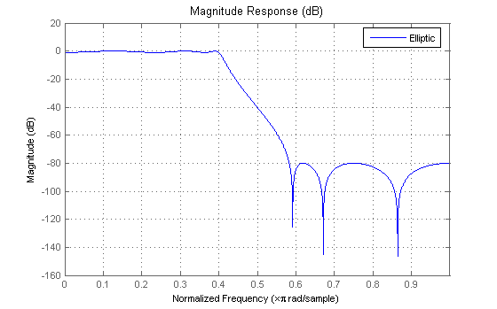

The Filter Visualization Tool (FVTool) is a Graphical User Interface available in the Signal Processing Toolbox. This tool allows you to use all of the filter analysis functions available in the Signal Processing Toolbox in a single figure window.
FVTool also has an Application Program Interface (API) that allows you to interact with the GUI from the command line. This enables you to integrate FVTool into other applications.
We want to create a filter with a passband frequency of 0.4 (normalized to 1). We will do this using some of the Signal Processing Toolbox's filter design methods and then analyze the results in FVTool.
Build a Direct-Form FIR filter object using the window (FIR1) design method.
Hd = dfilt.dffir(fir1(13, .4));
Build a Direct-Form II Transposed filter object using the elliptic (ELLIP) design method.
[b, a] = ellip(6, 1, 80, .4); Hd2 = dfilt.df2t(b,a);
Launch FVTool with the filter objects and return a handle to FVTool which enables us to reuse the same FVTool figure.
hfvt = fvtool(Hd, Hd2);
set(hfvt, 'Color', [1 1 1])
The elliptic filter is the closest to our specification, but we also want to see how well the CHEBY1 function performs.
You can add a filter to FVTool using the ADDFILTER method.
[b, a] = cheby1(6, 1, .4); Hd = dfilt.df2t(b,a); addfilter(hfvt, Hd);
To help us identify which line on the plot belongs to which filter, we will put up a legend. You can set the legend using the LEGEND method of FVTool.
legend(hfvt, 'FIR1 (Window)', 'Elliptic', 'Chebyshev Type I');
You can remove a filter from FVTool using the DELETEFILTER method and passing the index of the filter(s) that you want to remove.
deletefilter(hfvt, [1 3]);
We would like to delve deeper into the characteristics of this filter. The handle that FVTool returns contains properties that allow us to interact with both the filter and the current analysis.
To see all of the available properties you can use the GET command. The first properties are those of a regular MATLAB figure. The last fourteen properties are FVTool specific. The last six of these (from FrequencyScale to MagnitudeDisplay) are analysis specific.
s = get(hfvt);
% Keep the last 14 properties
c = struct2cell(s); f = fieldnames(s);
s = cell2struct(c(end-14:end),f(end-14:end),1)
Warning: figure Dithermap is no longer useful with TrueColor displays,
and will be removed in a future release.
s =
Filters: {[1x1 dfilt.df2t]}
Grid: 'on'
Legend: 'on'
DesignMask: 'off'
Fs: 1
Analysis: 'magnitude'
OverlayedAnalysis: ''
ShowReference: 'on'
PolyphaseView: 'off'
NormalizedFrequency: 'on'
FrequencyScale: 'Linear'
FrequencyRange: '[0, pi)'
NumberofPoints: 8192
FrequencyVector: [1x256 double]
MagnitudeDisplay: 'Magnitude (dB)'
All the parameters that are available from the FVTool's Analysis Parameters dialog are also available as properties of the FVTool object. The SET command with only two input arguments returns all possible values.
set(hfvt, 'MagnitudeDisplay')
ans =
'Magnitude'
'Magnitude (dB)'
'Magnitude squared'
'Zero-phase'
Turn the display to 'Magnitude Squared'
set(hfvt, 'MagnitudeDisplay', 'Magnitude Squared');
Get all possible values for the 'Analysis' property
set(hfvt, 'Analysis')
ans =
'magnitude'
'phase'
'freq'
'grpdelay'
'phasedelay'
'impulse'
'step'
'polezero'
'coefficients'
'info'
'magestimate'
'noisepower'
We have seen enough of the Magnitude Response and now we would like to see the Group Delay Response.
set(hfvt, 'Analysis', 'grpdelay');

Now that we have changed analysis, the GET command will return new Analysis Parameters.
GroupDelayUnits = get(hfvt, 'GroupDelayUnits')
GroupDelayUnits = Samples
We would also like to see how the Group Delay and the Zero-phase response overlap in the frequency domain.
You can overlay any two analyses in FVTool that share a common x-axis (time or frequency) by setting the 'OverlayedAnalysis' property.
set(hfvt, 'OverlayedAnalysis', 'magnitude', 'MagnitudeDisplay', 'Zero-phase', ... 'Legend', 'On');
To turn off the overlayed analysis simply set the 'OverlayedAnalysis' property to ''.
set(hfvt, 'OverlayedAnalysis', '', 'Legend', 'Off');
The FVTool window can also be annotated like a normal figure window.
The FVTool figure behaves as a normal figure window. This allows you to use MATLAB's grid and axis functions.
grid on
axis([.3 .45 5 25]);
The axis is also accessible from the command line. This allows you to change the title and labels.
title('Group Delay of an Elliptic filter'); xlabel('Frequency (normalized to 1)'); ylabel('Group Delay in samples'); htext = text(.35, 23, 'Maximum Group Delay');
FVTool will not automatically delete additional annotations from your analysis.
delete(htext);
If the Filter Design Toolbox is installed you can use FVTool with fixed-point DFILTs, multirate filters (MFILTs) and adaptive filters (ADAPTFILTs).
Show a quantized filter in FVTool.
b = firpm(40, [0 .4 .5 1], [1 1 0 0]); Hd = dfilt.dffir(b); set(Hd, 'Arithmetic', 'fixed'); set(hfvt, 'Filter', Hd, 'Analysis', 'magnitude', 'MagnitudeDisplay', 'Magnitude (dB)'); legend(hfvt, 'Equiripple Filter');
Show a Cascaded Integrator-Comb Decimator in FVTool.
Hm = mfilt.cicdecim(8,1,4); set(hfvt, 'Filter', Hm); legend(hfvt, 'CIC Decimator: R=8, M=1, N=4');
Build a Direct-Form FIR Least-mean-square (LMS) Adaptive Filter.
H = adaptfilt.lms(32, .008);
Filter a random signal to adapt the coefficients.
filter(H, rand(1,100), [1:100]);
Show the LMS filter in FVTool.
set(hfvt, 'Filter', H); legend(hfvt, get(H, 'Algorithm'));
Closing FVTool MATLAB's close function also works.
close